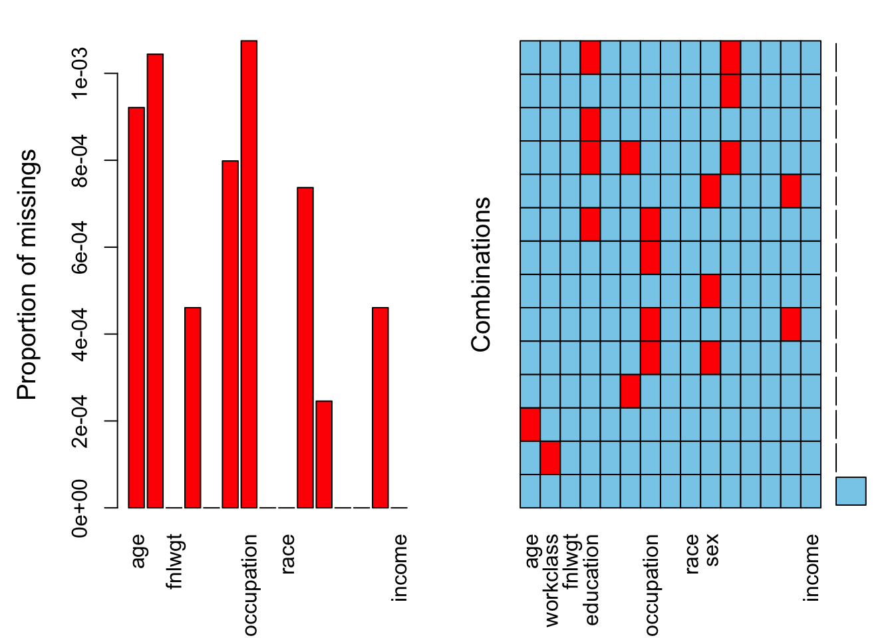

Warning: package 'ggplot2' was built under R version 4.5.2
── Attaching core tidyverse packages ──────────────────────── tidyverse 2.0.0 ──
✔ dplyr 1.1.4 ✔ readr 2.1.5
✔ forcats 1.0.1 ✔ stringr 1.5.2
✔ ggplot2 4.0.3 ✔ tibble 3.3.0
✔ lubridate 1.9.4 ✔ tidyr 1.3.1
✔ purrr 1.1.0
── Conflicts ────────────────────────────────────────── tidyverse_conflicts() ──
✖ dplyr::filter() masks stats::filter()
✖ dplyr::lag() masks stats::lag()
ℹ Use the conflicted package (<http://conflicted.r-lib.org/>) to force all conflicts to become errors
library(VIM)
Warning: package 'VIM' was built under R version 4.5.2
Loading required package: colorspace
Loading required package: grid
VIM is ready to use.
Suggestions and bug-reports can be submitted at: https://github.com/statistikat/VIM/issues
Attaching package: 'VIM'
The following object is masked from 'package:datasets':
sleep
df <-read_csv("adult_census_missing.csv")
Rows: 32561 Columns: 15
── Column specification ────────────────────────────────────────────────────────
Delimiter: ","
chr (9): workclass, education, marital.status, occupation, relationship, rac...
dbl (6): age, fnlwgt, education.num, capital.gain, capital.loss, hours.per.week
ℹ Use `spec()` to retrieve the full column specification for this data.
ℹ Specify the column types or set `show_col_types = FALSE` to quiet this message.
colSums(is.na(df))
age workclass fnlwgt education education.num
30 34 0 15 0
marital.status occupation relationship race sex
26 35 0 0 24
capital.gain capital.loss hours.per.week native.country income
8 0 0 15 0
Question 2 - Plot the number of NAs using aggr
aggr( df,numbers =TRUE)
Warning in plot.aggr(res, ...): not enough horizontal space to display
frequencies

Question 3
df %>%select_if(is.character) %>%map(table)
$workclass
? Federal-gov Local-gov Never-worked
1835 957 2086 7
Not Known Private Self-emp-inc Self-emp-not-inc
12 22664 1110 2537
State-gov Unknown Without-pay
1293 12 14
$education
10th 11th 12th 1st-4th 5th-6th 7th-8th
931 1174 431 168 333 645
9th Assoc-acdm Assoc-voc Bachelors Doctorate HS-grad
514 1064 1376 5342 413 10475
Masters Not Known Preschool Prof-school Some-college Unknown
1719 36 51 575 7273 26
$marital.status
Divorced Married-AF-spouse Married-civ-spouse
4435 23 14963
Married-spouse-absent Never-married Not Known
418 10666 12
Separated Widowed
1025 993
$occupation
? Adm-clerical Armed-Forces Craft-repair
1840 3761 9 4090
Exec-managerial Farming-fishing Handlers-cleaners Machine-op-inspct
4059 993 1368 2001
Not Known Other-service Priv-house-serv Prof-specialty
12 3287 149 4132
Protective-serv Sales Tech-support Transport-moving
647 3647 924 1594
Unknown
13
$relationship
Husband Not Known Not-in-family Other-relative Own-child
13164 48 8287 979 5054
Unknown Unmarried Wife
26 3439 1564
$race
Amer-Indian-Eskimo Asian-Pac-Islander Black Other
311 1039 3124 271
White
27816
$sex
Female Male Unknown
10752 21759 26
$native.country
? Cambodia
582 19
Canada China
121 75
Columbia Cuba
59 95
Dominican-Republic Ecuador
70 27
El-Salvador England
106 90
France Germany
29 136
Greece Guatemala
29 64
Haiti Holand-Netherlands
44 1
Honduras Hong
13 20
Hungary India
13 100
Iran Ireland
43 24
Italy Jamaica
73 81
Japan Laos
62 18
Mexico Nicaragua
642 34
Not Known Outlying-US(Guam-USVI-etc)
24 14
Peru Philippines
31 198
Poland Portugal
60 37
Puerto-Rico Scotland
114 12
South Taiwan
80 51
Thailand Trinadad&Tobago
18 18
United-States Unknown
29110 26
Vietnam Yugoslavia
67 16
$income
<=50K >50K
24720 7841